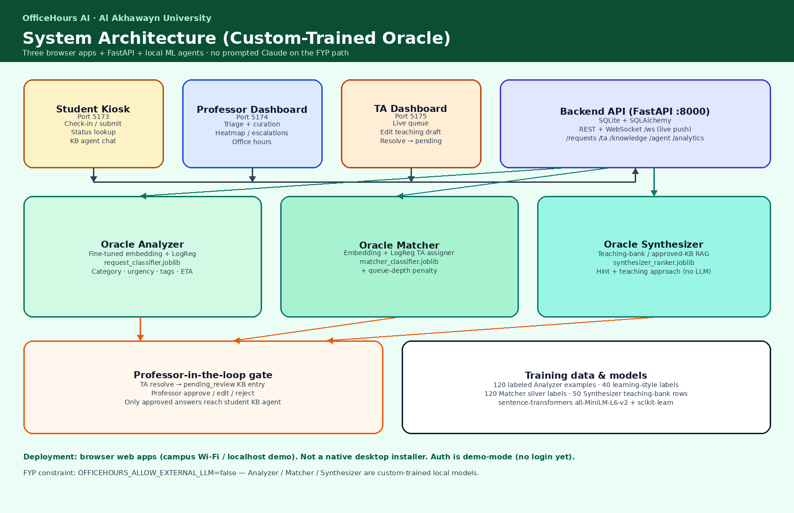

School of Science & Engineering · Capstone Project Proposal / Poster
OfficeHours AI: Multi-Role Campus Office-Hours Triage with Local NLP and Canvas Integration
Readable mirror of the filled .docx(add before print)
Project Overview
Finals-week support overload and student hesitation create repeated, urgent asks across email and Canvas. OfficeHours AI is a unified multi-role campus app that triages asks, staffs TAs, and lets professors stamp Study Agent answers. Contribution: gated local-NLP triage designed for Canvas-first deployment—not an unconstrained chatbot.
- Context: AUI courses; students, TAs, professors during peak support demand.
- Idea: React SPA + FastAPI with Ask Triage, Help Coach, stamped Study Agent, Rooms, Canvas LTI/sync.
- Contribution: Course-scoped triage, dual-TA staffing, KB approval gate, demo→live Canvas path.
Problem Definition & Relevance
Question: How can campus office hours cut repeat load and lower ask barriers while keeping professors in control of AI answers?
- Stakeholders: Students (Quiet asks, Study Agent, Strategist, Rooms); TAs (Live Queue, Help Coach); Professors (Repeated Topics, KB stamp, Canvas sync).
- Constraints: Synthetic/silver FYP labels; local ML by default; live Canvas needs IT credentials + HTTPS. No portal scraping; no unconstrained LLM backend.
Related Work, Gap & Innovation
- Alternatives: LMS inboxes; Piazza/Ed; tutoring chatbots; FAQ bots without professor gates or dual-TA matching.
- Gap: Missing Quiet escalation + local triage ML + dual-TA staffing + professor stamp before student-facing AI.
- Innovation: Ask Triage + Help Coach + stamped Study Agent in one app; Canvas LTI; trackable Quiet asks.
Objectives & Success Criteria
| Objective | Planned metric / evidence | Target / criterion |
|---|---|---|
| Triage & route asks to the right TA/help mode | Category/routing quality (holdout + demo walkthrough) | Usable triage in demo; cite holdout metrics carefully |
| Keep Study Agent answers professor-gated | Refuse unapproved/missing KB; stamp required before quotes | 0 unauthorized Study Agent quotes from pending KB |
| Enable Canvas-first campus deploy path | LTI launch + module sync on one AUI test course when IT enables | Live checklist pass on one AUI test course |
Pipeline
Ask Triage = MiniLM + LogisticRegression + RAG (joblibs). Help Coach = TA assist. Study Agent = approved KB only. Revision Strategist = client-side until live Canvas grades.
Proposed System / Design
Unified React SPA; FastAPI (requests/ta/knowledge/lti); SQLite→Postgres; WebSocket hub; Quiet-ask privacy; Canvas LTI 1.3 + REST.

Requirements & Work Plan
- Core triage + roles
- TA / Help Coach + KB gate
- Rooms + Canvas demo
- LTI + live sync
- Strategist grades + Postgres host
Dependencies: Canvas LTI key + API token; optional Entra; public HTTPS.
Methodology / Tech
- Iterative prototyping + CI
- FastAPI, React/Vite/Tailwind, SQLAlchemy, sentence-transformers, scikit-learn, WebSockets
- GitHub, docs/, train scripts, reports/
Evaluation
pytest + holdouts + gold-label TA lab + role walkthroughs + live Canvas checklist. Avoid overclaiming campus quality from synthetic metrics alone.
Feasibility & Risks
Risk: IT delay on LTI/API/Entra; Strategist grades blocked until token.
Mitigation: demo mirror for showcase; staged live on one course; Postgres at go-live.
Ethics / Responsible AI
Quiet asks; auth + CORS; professor stamp; external LLM off by default; refuse weak/missing KB; course-scoped least privilege.
Expected Impact
Safer faculty-controlled AI help for campus office hours; transferable to other LMS schools.
Limits: Not SIS replacement; not live-grade Strategist yet; not multilingual ChatGPT tutoring.
Key References
[1] AUI finals-week office-hours overload (stakeholder need). [2] LMS Q&A / discussion platforms (Piazza, Ed). [3] Canvas LTI 1.3; sentence-transformers MiniLM; scikit-learn classifiers.